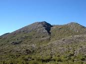

Pico da Bandeira: Espetáculo do Espírito Santo
Localizado na Serra do Caparaó, o Pico da Bandeira é um dos pontos mais altos do Brasil, com 2.892m de altitude. Este majestoso pico, situado entre o Espírito Santo e Minas Gerais, oferece trilhas desafiadoras e paisagens inesquecíveis para entusiastas da natureza e do trekking.
Se planeja visitar, lembre-se de respeitar e preservar a fauna e flora locais, garantindo que as gerações futuras também possam desfrutar deste patrimônio natural.
Saiba Mais